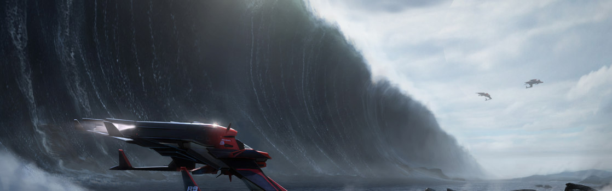

SYSTEM: HELIOS

Excurs - System: Helios
Helios ist ein seltsamer Ort in der besiedelten Galaxie, an dem natürliche Schönheit scheinbar ohne Übergang neben Schrottplätzen und militärischen Festungen liegt. Der Stern selbst ist teilweise mitverantwortlich für diese unübliche Variabilität. Helios ist ein Helium-starker B-Typ Stern, der starke Solarwinde erzeugt, die wiederum ein sonderbares Chaos auf die Schiffssensoren bringen. Selbst große Kapitalschiffe sind in der Lage, sich in den Solarwinden zu „verstecken“. Helios ungewöhnliche Photosphäre zieht außerdem zahllose Wissenschafter von überall her an, die eine Reihe von Plattformen in der Nähe des Sterns erbaut haben, die als Laboratorien und Beobachtungsposten arbeiten.
Die Entdeckung von Helios im Jahr 2509 gehört sicher zu den lebhafteren Ursprungsgeschichten eines Systems, und es ist das einzige, das jemals von der Advocacy entdeckt wurde. Eine OutlawGruppe, die als Daybreak Marauders bekannt geworden ist, hatte sich einen Namen gemacht, indem sie stets Konvois im Ellis-System als Ziel wählten. So schnell und effizient wie die Marauders ihre Beute angriffen und ausraubten, flohen sie anschließend ins Taranis System und verschwanden dann wieder ohne eine Spur. Das ging so monatelang. Das betroffene Unternehmen, der Uros Shipping Concern, verlor auf diese Weise viel von seiner Ladung, so dass er sich schließlich verschulden musste, um Söldergruppen anzuheuern, die seine Schiffe sicher durch das Elli- System eskortieren sollten – es waren Schulden, welche die Firma schlussendlich aber in den Bankrott getrieben haben.
Die Advocacy-Agenten, die dem Fall zugeteilt worden waren, die Special Agents Avon Dorville und Gia Trask, waren entschlossen, dieses schwer zu fassende Pack zu jagen. Für Monate verfolgten die Special Agents die Daybreak Marauders nach Taranis, nur um sie wieder und wieder zu verpassen. Als die Advocacy ihre Beute endlich gefunden hatte, waren sie verblüfft darüber, dass die Gruppe keine besonders effektive Route durch die Asteroidengürtel von Taranis entdeckt hatte. Stattdessen nutzten sie einen vorher unbekannten Sprungpunkt, um Taranis zu verlassen und sich an dem Ort zu verstecken, den man später als Helios kennenlernen sollte.
Trotz der sich schnell ändernden und launischen Gezeiten und der vulkanischen Aktivität wurde es Mode, aufwändige, temporäre Behausungen auf Tangaroas kurzlebigen Inseln zu bauen. Permanentere Behausungen werden hingegen meist auf oder unter dem Meer gebaut. Für diejenigen, die den Planeten ohne Risiko genießen wollen, hat der gastfreundliche Magnat Tyler Newman kürzlich Pläne für ein permanentes Unterseehotel enthüllt.
Nur die Polarregionen halten eine Standard-Population. Den Norden nennen vor allem Wissenschaftler und Ingenieure ihre Heimat und unterstützen damit die lokale Ferienhaus-Industrie, die sich um Helios eigenartigen Stern gebildet hat. Im Süden gehört die limitierte Menge von Land zu Forschungs- und Entwicklungseinrichtungen, welche die nahen Militärkräfte unterstützen. Die Hauptstadt des Planeten und Hauptlandezone, die sich im Norden befindet, wird offiziell „Mariana“ genannt“, obwohl sie von den Einheimischen „Shorebreak“ genannt wird, weil sie sich über die Küstenlinie hinaus auf das umgebende Meer erstreckt. Doch nicht jeder lebt in Angst vor der einzigartigen Gezeitennatur des Planeten. Einheimische U-Boot-Surfer feiern sie, indem sie stromlinienförmige und manövrierbare U-Boote in extrem hohen Wellen fahren.

„Erstaunlicherweise war das nicht der teuerste Gegenstand der Nacht. Diese Auszeichnung ging an ein Paket, das vom interstellaren Hellraiser Ellroy Cass angeboten wurde, der sein berüchtigtes Privatparty-Pad auf Tangaroa versteigerte! Dieses Privatparadies beinhaltet ein Anwesen mit Schlafplatz für 16 Leute, zwei Privatstränden und einen massiven Indoorpool, der über ein paar aufwändige Wasserrutschen mit der berühmten Grotte verbunden ist. Wenn diese Wände sprechen könnten, hätten wir genug StarWatch Material für tausend Jahre.“ – Callie C, StarWatch, 04.11.2945
Die Entdeckung von Helios im Jahr 2509 gehört sicher zu den lebhafteren Ursprungsgeschichten eines Systems, und es ist das einzige, das jemals von der Advocacy entdeckt wurde. Eine OutlawGruppe, die als Daybreak Marauders bekannt geworden ist, hatte sich einen Namen gemacht, indem sie stets Konvois im Ellis-System als Ziel wählten. So schnell und effizient wie die Marauders ihre Beute angriffen und ausraubten, flohen sie anschließend ins Taranis System und verschwanden dann wieder ohne eine Spur. Das ging so monatelang. Das betroffene Unternehmen, der Uros Shipping Concern, verlor auf diese Weise viel von seiner Ladung, so dass er sich schließlich verschulden musste, um Söldergruppen anzuheuern, die seine Schiffe sicher durch das Elli- System eskortieren sollten – es waren Schulden, welche die Firma schlussendlich aber in den Bankrott getrieben haben.
Die Advocacy-Agenten, die dem Fall zugeteilt worden waren, die Special Agents Avon Dorville und Gia Trask, waren entschlossen, dieses schwer zu fassende Pack zu jagen. Für Monate verfolgten die Special Agents die Daybreak Marauders nach Taranis, nur um sie wieder und wieder zu verpassen. Als die Advocacy ihre Beute endlich gefunden hatte, waren sie verblüfft darüber, dass die Gruppe keine besonders effektive Route durch die Asteroidengürtel von Taranis entdeckt hatte. Stattdessen nutzten sie einen vorher unbekannten Sprungpunkt, um Taranis zu verlassen und sich an dem Ort zu verstecken, den man später als Helios kennenlernen sollte.
Helios I
Helios I ist ein toter Planet ohne Atmosphäre mit einer begrenzten Menge Mineralien, die aber wegen der Nähe der Welt zum Stern schwer zu erreichen sind. Helios I war der Ort einer kurzen, unruhigen Aktivität im Jahr 2937, als eine wissenschaftliche Untersuchungsstation auf die Planetenoberfläche stürzte. Eine wagemutige Rettungsaktion durch Mitglieder der lokalen Garnison unter Nutzung von hitzegeschützten Jägern rettete damals sechs Leben vor einem schrecklichen Tod.Helios II (Tangaroa)
Helios II ist eine Ozeanwelt mit einem größeren Umfang als die Erde. Der Planet hat einen schnell kreisenden Mond mit einem dichten Nickel-Eisen-Kern. Die niedrige Dichte des Ozeanplaneten, kombiniert mit dem ungewöhnlichen Orbit des Mondes, sorgt oft für unvorhersehbare, vulkanische Aktivität. Dies bewirkt eine schnelle Bildung von Inseln und deren baldigen Untergang im Meer. Ursprünglich mineralreich, wurde der Planet schnell bewohnt, und die Tiefsee-Schürfrechte wurden an eine Reihe von Bergbauunternehmen verkauft. Es dauerte aber mehrere Jahrzehnte, bis der Planet einen Zufluss von Reichen und Berühmten erfuhr, die aufgrund der wunderschönen Meeresaussicht eintrafen.Trotz der sich schnell ändernden und launischen Gezeiten und der vulkanischen Aktivität wurde es Mode, aufwändige, temporäre Behausungen auf Tangaroas kurzlebigen Inseln zu bauen. Permanentere Behausungen werden hingegen meist auf oder unter dem Meer gebaut. Für diejenigen, die den Planeten ohne Risiko genießen wollen, hat der gastfreundliche Magnat Tyler Newman kürzlich Pläne für ein permanentes Unterseehotel enthüllt.
Nur die Polarregionen halten eine Standard-Population. Den Norden nennen vor allem Wissenschaftler und Ingenieure ihre Heimat und unterstützen damit die lokale Ferienhaus-Industrie, die sich um Helios eigenartigen Stern gebildet hat. Im Süden gehört die limitierte Menge von Land zu Forschungs- und Entwicklungseinrichtungen, welche die nahen Militärkräfte unterstützen. Die Hauptstadt des Planeten und Hauptlandezone, die sich im Norden befindet, wird offiziell „Mariana“ genannt“, obwohl sie von den Einheimischen „Shorebreak“ genannt wird, weil sie sich über die Küstenlinie hinaus auf das umgebende Meer erstreckt. Doch nicht jeder lebt in Angst vor der einzigartigen Gezeitennatur des Planeten. Einheimische U-Boot-Surfer feiern sie, indem sie stromlinienförmige und manövrierbare U-Boote in extrem hohen Wellen fahren.
INS Hephaestus Station
Im Orbit von Helios II schwebend, ist die Hephastus Station der zugänglichste Militäraußenposten im System. Die Landung auf dem Hauptlandepad der Station erfordert eine spezielle Erlaubnis, aber eine Außenstation auf der Planetenoberfläche erlaubt es Händlern, an die dort stationierten Militärkräfte zu verkaufen. Die Station ist der allgemeine Startbereich für die System-Sicherheitskräfte, aber reisende Kampfgruppen nutzen die Station auch hin und wieder als Operationshauptquartier, um Kriegsspielszenarios und Trainingsübungen abzuhalten.Helios III
Der dritte Planet des Helios Systems ist ein großer Gasgigant. Helios III ist eine Quelle für sofort verfügbaren Wasserstoff mit minimalen Verunreinigungen. Helios III reicht, was die Größe angeht, an die obere Grenze von Gasgiganten, was gelegentlich Wissenschaftler anlockt. Dem Planet fehlt jedoch das eindeutige Farbband und die komplizierten, lunaren Systeme, die man sonst auf jovianischen Planeten findet.Helios IV
Helios IV ist ein gewöhnlicher Eisplanet, ähnlich wie die meisten, die man im äußeren Teil von Systemen findet. Seine bemerkenswerteste Eigenschaft ist ein Militärkomplex, der in die eisige Planetenoberfläche hinein gebaut wurde. Als Beispiel für militärische Verschwendung kritisiert, hat das Militär nie eine offizielle Stellungnahme zu den riesigen Summen von Credits abgegeben, die zur Errichtung dieses abgelegenen Außenpostens ausgegeben wurden. Während die meisten im aktiven Dienst den Einsatz auf Helios IV als Zeichen für eine steckengebliebene Karriere ansehen, gibt es einige, die der Meinung sind, dass die Beamten die wahre strategische Bedeutung des Komplexes vor der Öffentlichkeit verstecken. Der Komplex beheimatet angeblich Black-Ops Trainings- oder TopSecret Forschungseinrichtungen.
Reisewarnung
Achten Sie auf die sehr intensiven Solarwinde. Was Sie vor anderen Schiffen verstecken kann, kann auch lauernde Schiffe verbergen und Ihre Sensorik verzerren oder deaktivieren. Dadurch fliegen Sie blind.Ein Flüstern im Wind
„Mit den großen Distanzen, die die Menschheit während der Expansion zu den Sternen trennen, ist es ein großer Trost, dass man immer auf die Hilfe seiner Nachbarn zählen kann.“ – Dr. Ariel Thario, Überlebende des 2937 Helios I Disasters„Erstaunlicherweise war das nicht der teuerste Gegenstand der Nacht. Diese Auszeichnung ging an ein Paket, das vom interstellaren Hellraiser Ellroy Cass angeboten wurde, der sein berüchtigtes Privatparty-Pad auf Tangaroa versteigerte! Dieses Privatparadies beinhaltet ein Anwesen mit Schlafplatz für 16 Leute, zwei Privatstränden und einen massiven Indoorpool, der über ein paar aufwändige Wasserrutschen mit der berühmten Grotte verbunden ist. Wenn diese Wände sprechen könnten, hätten wir genug StarWatch Material für tausend Jahre.“ – Callie C, StarWatch, 04.11.2945